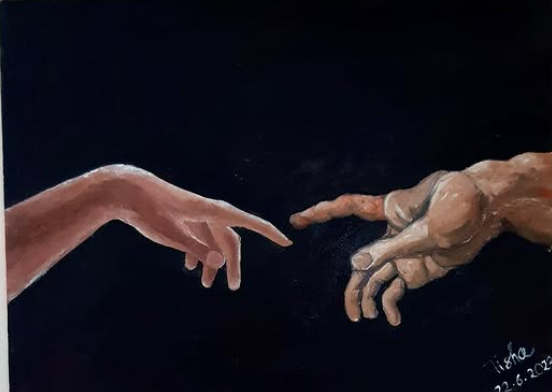
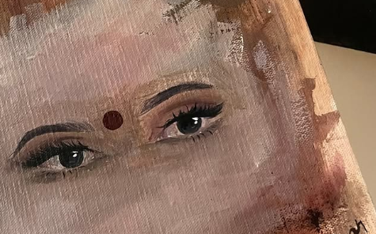
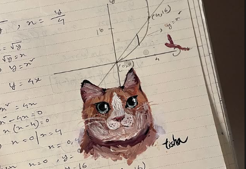

I’m a CSE student at North South University, Bangladesh, with a soul rooted in creativity. Beyond the world of code and algorithms, I find peace in gardening, expressing myself through art, and singing my heart out. Rainy days are especially close to me—they call for a cup of tea and Nazrul Sangeet. Megh Bolche Jabo Jabo by Humayun Ahmed is my favorite book, and I deeply admire the writings of Manik Bandopadhyay for their raw emotional depth. Whether it's through a melody, a brushstroke, or a blooming flower—I try to live life with feeling.


